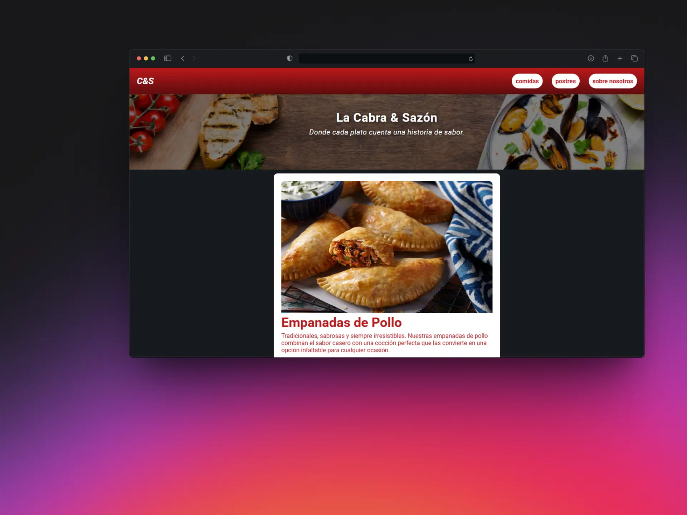
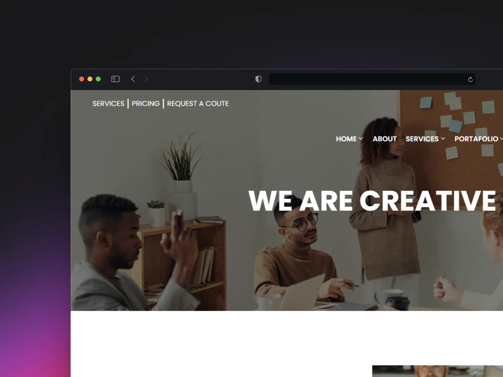
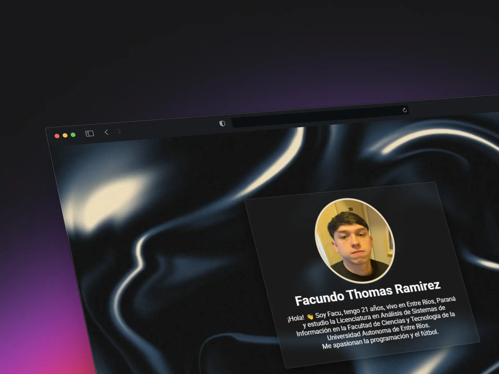

Home
Projects
Skills
About
Contact
¡Hola! soy Facundo Ramirez
Analista en Sistemas y Programador FullStack.
Mi CV
PROJECTS

MENU DIGITAL
Teconologias: HTML | CSS
Ver
PAPER, PLEASE
Teconologias: QT | C++ | CSS
Ver

LANDING PAGE CLON
Teconologias: HTML | CSS
Ver

TARJETA DE PRESENTACION
Teconologias: HTML | CSS
Ver